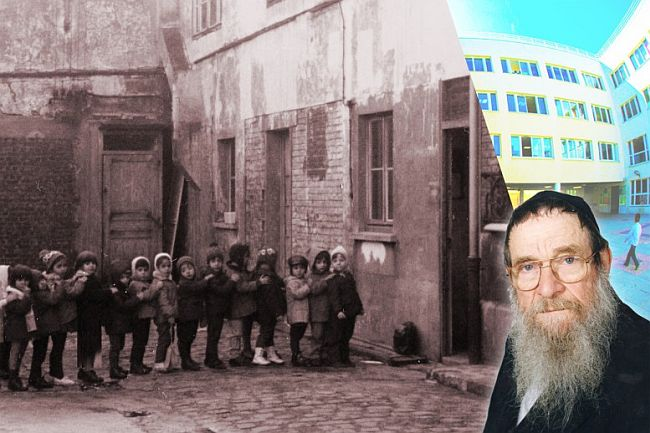

The Couple Who Built an Empire from Scratch
Rabbi Sholom Mendel Kalmanson, who arrived in France as a refugee, was a model of a true Chassid. With great fortitude he undertook the founding of a Chassidic school for Jewish children who did not even know the alef-beis. * With bittul and kabbalas ol, Rabbi and Mrs. Kalmanson founded “Shneor.” They did whatever it took to realize their educational vision, and were constantly guided by the Rebbe. * A moving saga of a Chassidishe couple, based on the book written by R’ Sholom Dovber Friedland. * Part 2 of 2

R’ Sholom Mendel’s wife Basia stood at his side. She gave up her personal life and comforts, and her family and community life, for the good of the talmidim and the school. No days and no nights; she was at the wheel and at the pots, never stopping, on behalf of Jewish children.
Early in the morning she would drive the bus (see Beis Moshiach issue # 1085). According to the students and their parents, the yiras Shamayim the children absorbed while on the bus was engraved in them no less than the time they spent in school.
When she returned from her rounds, which began before seven in the morning and ended close to nine, she hurried home to finish dressing and feeding her little children. Then she began cooking healthy food for the schoolchildren.
After feeding everyone, she cleaned up, listened to whoever needed to pour out his heart, and helped in the office with the accounts. At that point, she began getting ready to do her rounds and bring the children home, which was late in the evening. All this was done for the sake of heaven and for the purpose of giving the Rebbe nachas. She did not take a cent in salary.
R’ Sholom Mendel and his wife took many burdens upon themselves in order to save the school money. R’ Yaakov Bitton, shliach in Sarcelles, who was a teacher in the school, related:
“One day, as the bus made the rounds to pick up the children, for some reason, one child was skipped. The boy called his father, saying that he was left behind. The father, who had a grocery store and was already in the store, had to close it and bring his son to school.
“The man was furious. How could his son be overlooked and cause him to lose customers? He planned on telling the principal off for this mishap.
“Upon arriving at the school, he angrily got out of his car and went over to the ‘worker,’ a bearded man who was unloading boxes of fruits and vegetables from the car into the building. He asked where the principal was, thinking the principal was lounging in his comfortable office.
“The bearded man suggested he say a bracha on a fruit. ‘You must be a bit hungry; say a bracha!’ The father, who began to calm down, loudly asked where the principal was. After R’ Sholom Mendel finished dragging in all the boxes, he invited him to his modest office to hear what he had to say.
“The father was speechless. ‘What?! You are the principal? And you were dragging all the boxes in without asking for help from any of the workers?’ How could he complain to a man who personally bore the physical burdens of the school and invested so much into it. He claimed he had come to make a donation toward the school’s maintenance. He took out his checkbook and wrote a nice check.”
THE CHILDREN PARTICIPATED IN THE SIX DAY WAR
The number of students grew and classes were added. The staff grew too and another five teachers were added for both the Jewish and secular studies. Rabbi Yosef Dovid Frankfurter was chosen to run the school in the early years. R’ Frankfurter invested all of his energies in providing a kosher chinuch and in developing the school.
Mr. Avrohom Turgeman:
“At school, I was exposed for the first time to the Lubavitcher Rebbe. We got used to hearing every day, ‘The Rebbe said,’ ‘the Rebbe instructed,’ ‘the Rebbe blessed.’ We knew he was a very big tzaddik. I imagined him as an angel who had to be obeyed, and everything he promised, came true. Thanks to this, even in later years, it was important to us to obey his instructions, and most importantly, to strengthen matters of Torah and mitzvos.
“Something that made a great impression on me, and perhaps this also tells you what kind of atmosphere prevailed in the school at the time, was the Six Day War. We, as French children, were not involved in what was going on in the Middle East, but we heard that a war might break out. At school, R’ Kalmanson spoke a lot about the instructions the Rebbe gave, and he told us that the Rebbe promised that all would be well, but gatherings of children should be made and T’hillim said with them.
“When the war began, we knew that the Rebbe himself was relying on us and our prayers to accomplish victory for the Jews. We gathered near the Aron Kodesh and for a few hours said all of T’hillim, word by word with the teacher. We were not able to read well yet, so we repeated the entire T’hillim after our teacher with cries that Hashem save the Jewish people. Some of the children held on to the paroches in front of the Aron Kodesh the entire time. The next day, the scene repeated itself. Until today, I don’t understand how we were able to do that for hours, to say T’hillim with such seriousness for so long, without a break. We felt that the war depended on us. We were fighting for Eretz Yisroel. The Rebbe gave us the job to deliver victory and we would do it in the fullest sense.
“Every day of the war, we pleaded with Hashem that the Jews should not be hurt and that they should win. We felt that we were taking an active role in the war. After six days, R’ Kalmanson came into our classroom and exulted, ‘The Jews won! Am Yisroel won!’ We danced and rejoiced, Yisroel won, we won! It was us, with our T’hillim! We delivered the decisive blow! Till today, when I hear about the Six Day War, I feel like someone who took an active part in it.”
THE REBBE HAS NACHAS
About 100 children learned in the five classes that they had in the school’s third year, 5728 (1968), including a preschool. The level of learning was high, and on a government test, the children scored the highest marks compared to other schools in the district. This raised their status in the educational establishment in Paris.
The Kalmanson daughters began to get involved with the school at some point. First it was their oldest daughter, Baila Risha, who did her work, unpaid. The following year, their second daughter, Rivka, began helping run the school.
In Teves 5729, Baila became engaged to R’ Mendel Hillel Gansbourg. Rivka then took on the entire burden of the spiritual administration. This practice continued over the years. Till today, the baton of running the school has been passed among family members.
Whenever Mrs. Kalmanson went to the Rebbe to get a bracha, the Rebbe’s satisfaction was apparent on his face. “Whenever I went in, the Rebbe would give me a fatherly feeling and answered every detail and encouraged us in our work. I felt like a daughter going to her father to ask for what she needs. Every time, when I stood there to receive the Rebbe’s bracha for my trip home, the Rebbe would give his bracha with a smile of nachas on his face. From these brachos I got the strength to continue the work.”
The Rebbe enjoyed much nachas from their devoted work and this was expressed in answers and the many private audiences that the Kalmansons had. What follows are a selection of them.
Mrs. Basia Kalmanson related an extraordinary response regarding their work that the Rebbe said to her directly:
“My parents were informed of my hard work for the school and it bothered them. They were very concerned for my physical and mental health. One time, before my yechidus, my mother ordered me insistently to tell the Rebbe in her name that I was taking on too much work and she wanted me to ask the Rebbe for permission to reduce the hours I was working for the school. Having no choice, I promised her I would do so.
“I went in for yechidus nervously and with great ambivalence as to how to do what my mother demanded. After the brachos, I told the Rebbe that I had something to say. It wasn’t coming from me, but from my mother who told me to say it. I repeated what she said and as she requested, I described my daily schedule.
“The Rebbe nodded understandingly with a big smile of nachas on his face. He said these words that ring in my ears till today: ‘Azoi? Azoi? [Is that how it is?] You should know that Hashem is happy with your work. Continue with it and add more and it will bring you blessing. Tell your parents that they should come see me and I will work things out with them.’
“The whole thing with my mother’s request was worth it just to hear this from the Rebbe. When I left the Rebbe’s room, my mother rushed over to hear what the Rebbe said. When I told her, she said with a resigned smile, ‘Nu, you can’t play around with the Rebbe’s explicit words.’”
THE YOM KIPPUR REVOLUTION
Over the years, other Kalmanson daughters began working in the school. The work of the three daughters, Shterna Sarah Deitsch, Leah Raskin, and Chaya Nisselevitch, made a significant impact and many youngsters and their parents began finding their way toward Judaism.
For example, Mr. Shlomo Cohen relates:
“After our family emigrated from North Africa to France, they found themselves, like many others, living in a small apartment on the periphery of Paris. Our family crowded into a neighborhood with thousands of emigrants, most of them Arabs. Big financial problems and lack of clarity as to the future, is how I found myself in public school, surrounded by many non-Jewish classmates. I quickly became known as a smart, mischievous boy, expert in mischief and pranks. Those kids who were inclined towards crime were attracted to me and wanted to learn techniques for hiding things and stealing things without being caught.
“One day, one of the Arab kids suggested we go to a Jewish synagogue. ‘It’s interesting there,’ he said. ‘Today is Yom Kippur and there are many Jews. Maybe we can poke fun at them.’
“I brought the group to the shul to provide my friends with an interesting adventure. We got closer, with a train of boys following my every move. Near the shul’s doorway, we saw a commotion. Inside, all the adults prayed, while boys congregated outside. In the midst of the ruckus stood two girls, Mora Sarah and Mora Chaya. They called out p’sukim and t’fillos and the children repeated after them. It interested me and I motioned to my classmates to leave me alone, because I had no plans to make any trouble. I wanted to see what was going on. It spoke to me.
“After a few moments, Mora Sarah came over to me and asked my name. ‘Solomon Cohen,’ I said. ‘So you’re Jewish?’ she asked and included me in the recitation of the t’fillos. She made sure to take my address. The next morning, a delegation from the Shneor school appeared at my home. It was R’ Kalmanson and his daughters. They began convincing my parents to send me to a Jewish school. My parents loved the idea. At the local school I hadn’t progressed much, and the direction I was heading in wasn’t encouraging.
“The education I got at Shneor changed my life and gave me enormous satisfaction. I got older and learned a profession, but the chinuch remained with me. I remained religious, am one of the regular participants in the local community’s activities and am one of the nucleus of the shul in La Courneuve. My children also attended the Shneor school.”
THE NEW PRINCIPAL MAKES “PROBLEMS”
In Elul 5737/1977, a major change took place when the Rebbe allowed R’ Sholom Mendel to bring another principal in, under him, namely, his son-in-law, R’ Mendel Deitsch (a”h). “The answer to him and his son-in-law – in general the suggestion is a good one,” wrote the secretary on behalf of the Rebbe.
From that point on, the burden of the hanhala gashmis fell on R’ Mendel Deitsch. His wife continued to run the hanhala ruchnis. When Mrs. Basia Kalmanson next had yechidus, the Rebbe smiled when he referred to the appointment of her son-in-law as menahel: “Nu, [now] you have [a menahel] and he is a suitable person for this.”
R’ Mendel Deitsch threw himself into developing the mosdos. The most pressing issue was covering the previous debts and expanding the school. He started a fundraising drive in the United States and other countries, and was successful.
“When I had yechidus in Tishrei 5738/1977,” said R’ Mendel Deitsch, “the Rebbe looked at me and asked, ‘Were you successful here?’
“I had no idea what success meant to the Rebbe. In a split second, I got an idea of what to say. I specified the amount I had been able to raise, without defining it as successful or unsuccessful. The Rebbe looked pleased. He took a pencil and wrote the amount on the page I had submitted when I entered for yechidus.
“When I returned to Paris, I met R’ Binyamin Gorodetzky and he said to me, ‘Mendel, you are making problems for the shluchim!’ I realized that what he said had something to do with what the Rebbe said to him and I became nervous. What had I done?
“But he explained with a smile, ‘Recently, when I went to the Rebbe to report about the work of the shluchim in Europe, I spoke about some shluchim who were stuck with problems in development and budgets. When I described the problems, the Rebbe said, ‘I don’t understand. A person came from Yerushalayim whose name is Deitsch. He doesn’t know the language and he manages to both bring in children and to raise money.’”
EDUCATIONAL GUIDANCE FROM RABBI CHADAKOV
Over the coming decades, the school expanded under the hanhala gashmis of R’ Mendel Deitsch and the hanhala ruchnis of Mrs. Chaya Nisselevitch, who was a model of devotion and giving.
The primary goal for which the school was founded, i.e., spreading Judaism and the wellsprings of Chassidus, was and still is, making an impact. Thousands of the students who learned there over the years came from irreligious homes. The chinuch they were given seeped into their homes. Numerous families became religious thanks to the extraordinary chinuch their children received in the Shneor schools.
Even children who came from religious homes, but were from non-Chassidic groups, brought the spirit of Chassidus to their homes. The concepts of “hafatzas haYahadus, “neshama Elokis,” “hashgacha pratis,” “preparing the environment for the coming of Moshiach,” “hiskashrus to the tzaddik,” and many others, became part of their vocabulary just as it was for Chassidim throughout the generations.
Toward the end of the 80’s, the school had close to 1000 students in its various branches; the elementary school, the high schools for boys and girls, the preschool, and the cheider al taharas ha’kodesh.
As a matter of course, complicated chinuch questions arose. The one who helped guide them was the Rebbe’s chief secretary, Rabbi Chaim Mordechai Isaac Chadakov a”h, who gave advice and provided direction and guidance. R’ Chadakov was considered a master educator and it was clear that what he said was in line with the intentions and desires of the Rebbe.
Mrs. Nisselevitch relates:
“We went to 770 for Tishrei 5750, and my father suggested that I go with him to R’ Chadakov and present my questions to him, along with another question which every menahel has to deal with – how to handle tough students. Should one look away or take a hard line even to the point of expulsion.
“R’ Chadakov received us graciously, and despite his age and weakness he extended to us chairs and refreshments. After I finished presenting my question, R’ Chadakov began to expound softly. His words flowed from his mouth lucidly, sharply, clearly, in a sweet and youthful voice filled with a great deal of energy, despite his advanced age. He began by explaining what a school must provide a student:
“‘A student who learns in a Chabad mosad has to be instilled with the awareness that “Ein Od Milvado,” that all of existence, and that includes his own personality, is utterly nullified to G-d. This is why we begin the day with Modeh Ani – as soon as a person wakes up and becomes aware of his existence, he is nullified before G-d. Then he davens, and t’filla is a time to reflect deeply upon the nullification of a Jew toward G-dliness and to instill this awareness into his inner senses and faculties.
“‘A school needs to endow students with the awareness that everything revolves around the Creator of the world, and all is nullified before Him. Man’s job is, as the Mishna says, ‘I was not created except to serve my Maker.’”
THE MOSAD TODAY
In later years, additional family members joined the administration in successfully running the mosdos, led by R’ Meir Simcha Kalmanson who serves as shliach and menahel gashmi, along with the dedicated assistance of his brother, R’ YY Kalmanson, and their brother-in-law, R’ Eliezer Nisselevitch. They work night and day for the success of the mosad.
Until the end of his life, R’ Sholom Mendel was fully involved in the school. He learned with struggling students, guided them in the ways of Yahadus during recess, and provided students with authentic Jewish content as well as being a living role model on a day to day basis.
Mrs. Basia Kalmanson (may she live long), continued to take care of transportation and food preparation even as the school expanded. Until today, she is still at her post. For over fifty years now, she supervises the children, takes care of their spiritual and material needs, teaches them to daven, to behave nicely, to wash their hands, to say a bracha before and after a meal. She teaches what the k’dusha of Torah is, the k’dusha of Yahadus, the k’dusha of the Jewish soul, and what it means to obey the Rebbe.
S.Z. Levin. "The Couple Who Built an Empire from Scratch." Beis Moshiach, no. 1085 (September 13, 2017).